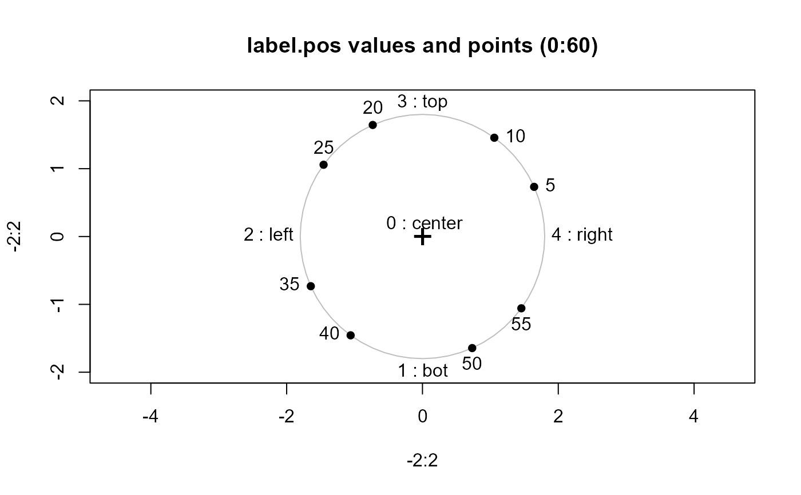
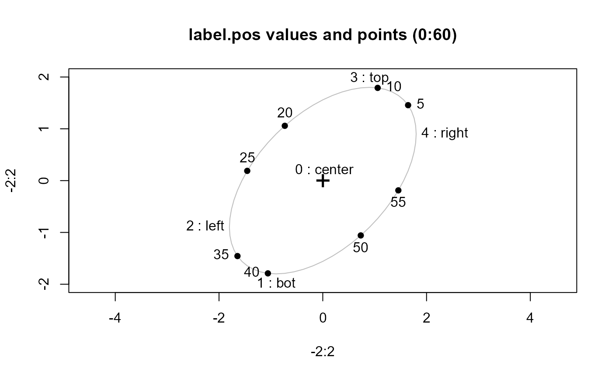

label.ellipse is used to a draw text label on an ellipse at its center or
somewhere around the periphery in a very flexible way.
Arguments
- ellipse
A two-column matrix of coordinates for the ellipse boundary
- label
Character string to be used as the ellipse label
- col
Label color
- label.pos
Label position relative to the ellipse. See details
- xpd
Should the label be allowed to extend beyond the plot limits?
- tweak
A vector of two lengths used to tweak label positions
- ...
Other parameters passed to
text, e.g.,cex, ...
Details
If label.pos=NULL, the function uses the sign of the correlation
represented by the ellipse to determine a position
at the top (\(r>=0\)) or bottom (\(r<0\)) of the ellipse.
Integer values of 0, 1, 2, 3 and 4, respectively indicate positions
at the center, below, to the left of, above
and to the right of the max/min coordinates of the ellipse.
Label positions can also be specified as the corresponding character strings
c("center", "bottom", "left", "top", "right"), or compass directions,
c("C", "S", "W", "N", "E"), or
Other integer label.pos values, 5:nrow(ellipse) are taken as indices of the row coordinates
to be used for the ellipse label.
Equivalently, label.pos can also be a fraction in (0,1), interpreted
as the fraction of the way around the unit circle, counterclockwise from the point (1,0).
Examples
circle <- function(center=c(0,0), radius=1, segments=60) {
angles <- (0:segments)*2*pi/segments
circle <- radius * cbind( cos(angles), sin(angles))
t( c(center) + t( circle ))
}
label_demo <- function(ell) {
plot(-2:2, -2:2, type="n", asp=1, main="label.pos values and points (0:60)")
lines(ell, col="gray")
points(0, 0, pch="+", cex=2)
labs <- c("center", "bot", "left", "top", "right")
for (i in 0:4) {
label.ellipse(ell, label=paste(i, ":", labs[i+1]), label.pos = i)
}
for( i in 5*c(1,2, 4,5, 7,8, 10,11)) {
points(ell[i,1], ell[i,2], pch=16)
label.ellipse(ell, label=i, label.pos=i)
}
}
circ <- circle(radius=1.8)
label_demo(circ)

ell <-circ %*% chol(matrix( c(1, .5, .5, 1), 2, 2))
label_demo(ell)
